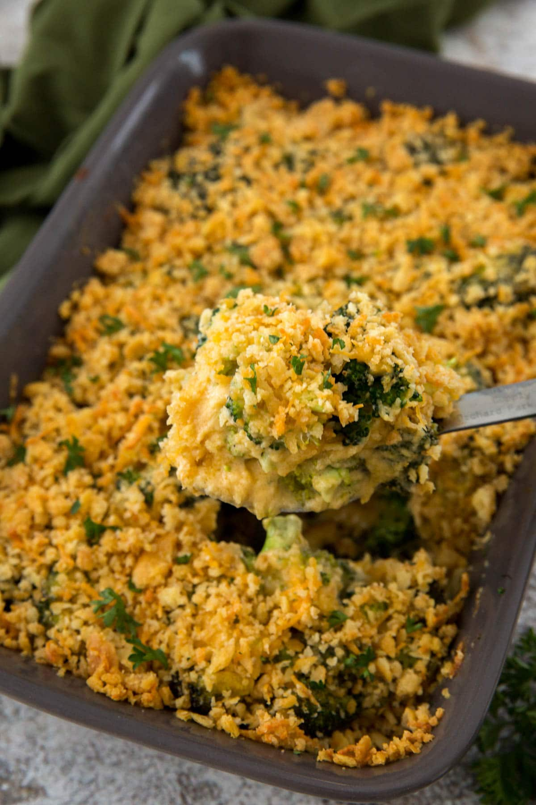

Broccoli Casserole

Cheesy Broccoli Casserole
This Cheesy Broccoli Casserole has tender broccoli smothered in a rich and creamy homemade cheddar cheese sauce. The cheesy, cracker crumb topping adds a crispy finish to this delicious side dish.
Ingredients
- Broccoli
- Shredded Cheddar Cheese
- Flour
- Butter
- Ritz Crackers
Step-by-Step
- Blanch the broccoli in boiling water for a few minutes to get the cooking process started. It will finish cooking in the oven.
- Make the creamy cheese sauce. The sauce is just a roux of flour, butter and milk (or half & half) and lots of shredded cheddar cheese.
- The topping is just crushed up butter crackers (like Ritz) and melted butter with a little more shredded cheddar thrown in for good measure. Because you can't have too much cheese in a broccoli casserole.
- Toss the broccoli with the cheese sauce, pour it in the baking dish, top it with the crushed crackers and bake in the oven for about 20 minutes. The top will get nice and golden and the cheese sauce will be bubbling up on the sides. It will look and smell amazing and that's how you'll know it's finished!
- If it's not brown enough for you, flip on the broiler for a few minutes until it's golden.
Return to Recipes